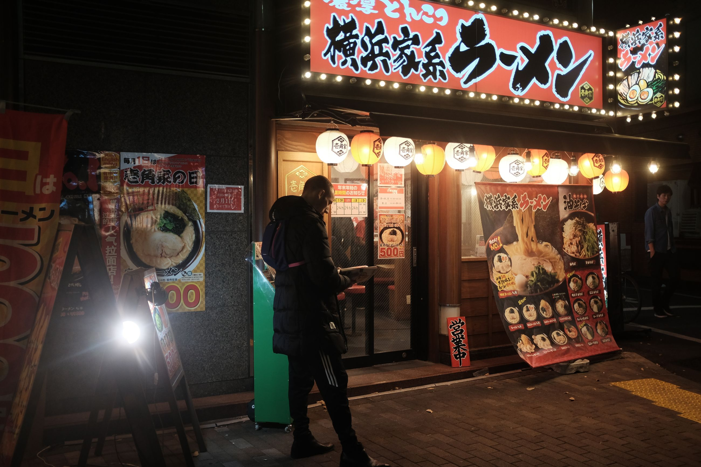
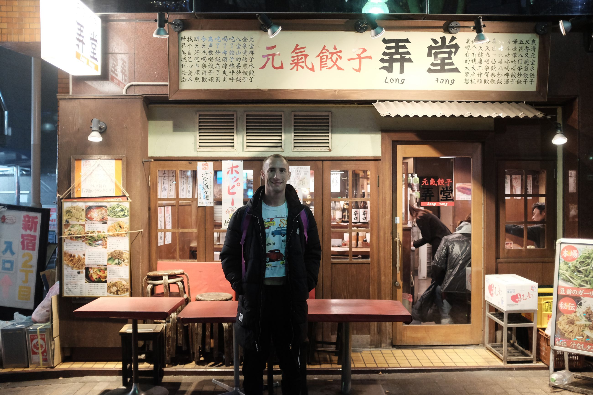
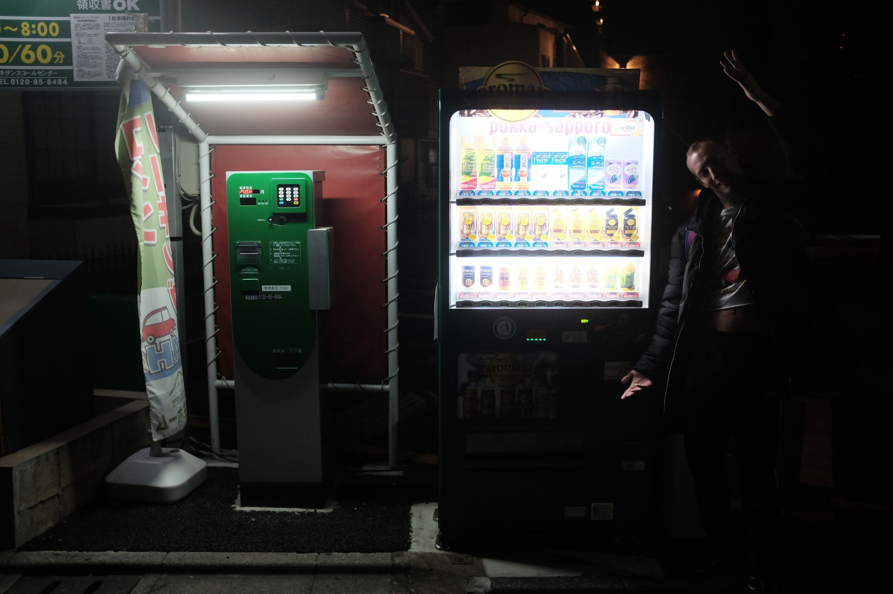

Friday night. I get into Haneda and find my way to the accommodation. Once I transit in Shinjuku it's a nightmare. There's some order to the madness that is the Tokyo Subway system. It's intelligible to the tourist but "so convenient" for the locals. After figuring out that there are three different companies that operate the lines, and the transfers between the stations require different tickets, I make it to the station to exit.
I find my way to the MisterBnB that we booked -- an airBnB for gay guys. It was owned by a Japanese bear who was very friendly. In his MisterBnB profile, it read: "4 bedroom house. You get the guest bedroom. Toiletires not included. Vers Bottom (insert physical stats here)." When we met him, he gave us suggestions. "For the gym, the Tokyo Metropolitan Gym is the best. But, watch out, it's sometimes cruisy. Especially the pool. If you're into that though, go for it. Finally, a real local guide.
Thorin and I reunite after what seems like ages. We walk around Shinjuku gay area for a meal then just head back.
  